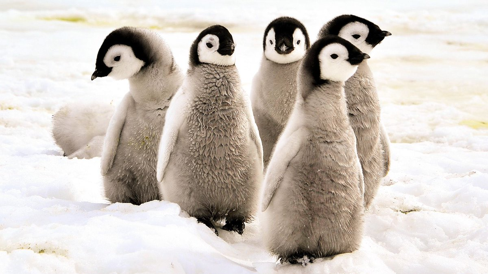
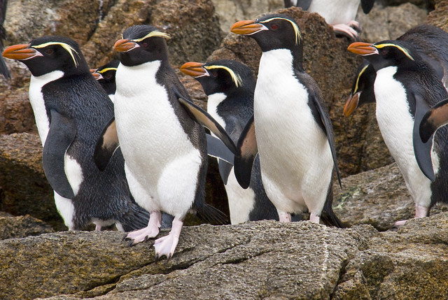

Penguins (order Sphenisciformes — family Spheniscidae) are a group of aquatic flightless birds. They live almost exclusively in the Southern Hemisphere, with only one species, the Galapagos penguin, found north of the equator. Highly adapted for life in the water, penguins have countershaded dark and white plumage and flippers for swimming. Adult penguins only recognize their own baby chicks. Parents can tell the chicks apart based on a unique call that every chick has, according to SeaWorld. Chicks
There are 17 penguin species part of the Spheniscidae family. This family includes non-flying birds with a semi-aquatic lifestyle and anatomical characteristics very different from other types of birds that we commonly know. Different species List include African Penguin, Chinstrap Penguin, Emperor Penguin, Gentoo Penguin, Adelie Penguin, King Penguin, Galapagos Penguin, Humboldt Penguin, Erect-crested Penguin, Macaroni Penguin, Fiordland Penguin, Snares Penguin, Magellanic Penguin, Royal Penguin, Little Blue Penguin, Rockhopper Penguin, Yellow-eyed Penguin. Snares Penguins